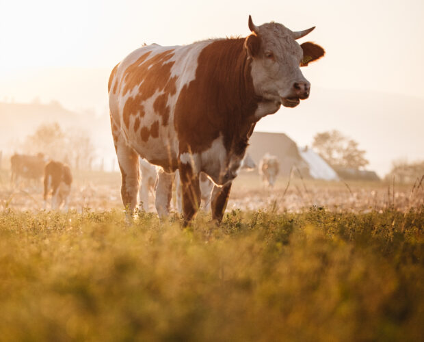
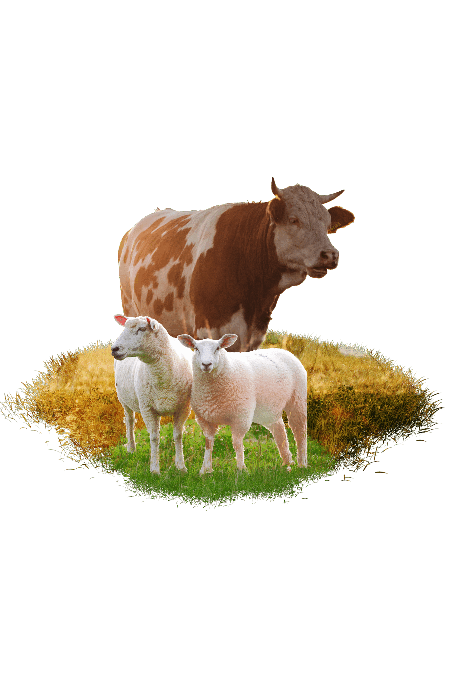
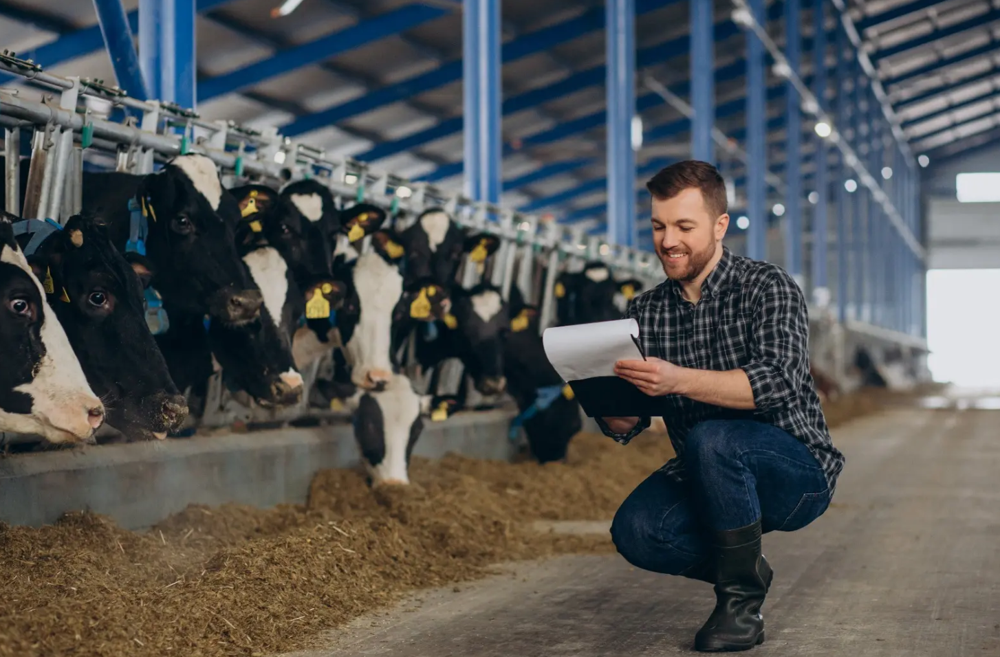

Canlı Kesim Takibi
Kurbanınızın kesim durumunu anlık olarak takip edin
Hizmetlerimiz
25 yıllık tecrübe ile profesyonel kurban organizasyonu
İslami Usullere Uygun Kesim
Kurbanınızı ibadet hassasiyeti ile tüm fıkıh kurallarına riayet ederek, hocalarımız eşliğinde, veteriner hekim kontrolü altında kesiyoruz.
Güvenilir ve Hijyenik Ortam
Yüksek teknolojiye sahip 10.000 m² kapalı alanlı bir tesiste, gıda güvenliği standartlarına uygun şekilde çalışıyoruz.
Hassas Hisse Paylama
Hassas, elektronik, 7 gözlü tartılar ile eşit hisseleme. Her hisse hakkaniyetle tartılarak ayrılır.
Frigolu Araçlar
Soğuk hava frigolu araçlarla soğuk zincir bozulmadan teslim. Kesim sonrası etleriniz güvenle ulaştırılır.
Profesyonel Kasaplar
Profesyonel kasap kadrosu ile aynı gün teslim. 25 yıllık tecrübe ile hizmetinizdeyiz.
İhtiyaç Sahiplerine Ulaştırma
Kurban etleri Kuran kurslarında eğitim gören talebelerimize ve ihtiyaç sahibi vatandaşlarımıza ulaştırılmaktadır.
Kurbanınızı Yerinde Görün
Kurbanınızı bayramdan birkaç gün önceden yerinde görme imkanı sunuyoruz.
Kesim Videosu
Kesim süreci video kaydına alınır. Kurbanınızın kesildiğine dair video tarafınıza iletilir.
Hisse Gruplarımız
2026 Kurban sıra kayıtlarımız başladı

Büyükbaş Hisse

Küçükbaş Hisse
Bağış Kurban
Bağışınız ihtiyaç sahiplerine ulaştırılır.
Nasıl Çalışıyoruz?
Başvrudan teslimatka, adım adım sürecimiz
Başvuru ve Kayıt
Web sitemizden, WhatsApp veya telefon yoluyla başvurunuzu alıyoruz. Gün içerisinde sizlerle irtibat kurup detaylı bilgileri görüşüyoruz.
Kurbanlık Seçimi
İslami şartlara uygun, sağlıklı ve veteriner kontrolünden geçmiş büyükbaş ve küçükbaş kurbanlıkları özenle seçiyoruz.
Hissedarların Belirlenmesi
Büyükbaş kurbanlar için 7 kişilik hissedar grupları oluşturuyoruz. Kesim öncesinde tüm hissedarlardan vekalet alıyoruz.
Vekalet Alımı
Kayıt sırasında vekaletiniz sesli veya yazılı olarak alınır. Kesim anında kasap ve şahitler huzurunda isminiz zikredilerek kesim gerçekleştirilir.
Kesim ve Parçalama
Kurbanlar islami usullere uygun, hijyenik ortamda profesyonel kasaplar tarafından kesilir ve 7 kollu terazilerde tartılarak parçalanır.
Paketleme ve Teslimat
Tüm hissedarlara eşit şekilde kasalar halinde verilir. Kesim mahallinden veya teslim noktalarımızdan alabilirsiniz.
Kurban Video Sorgulama
Kurban numaranızı girerek kesim videosunu görüntüleyin
Kurban numarası girerek kesim videosunu görüntüleyebilirsiniz.
Hakkımızda

2003'ten Bu Yana Güveninizle
İstanbul Samandrıa'da 25 yıllık hizmetin tecrübesiyle sizlere ehlinin elinden kurban organizasyonu sunuyoruz. Her yıl yüzlerce müslüman, kurban ibadetinde bizi tercih ediyor.
Anadolu'dan seçerek satın aldığımız kurbanlıklarımızdan dilediğinize hissedar ediyoruz. Vekaletinizi aldıktan sonra bayramın 1. günü sizlere verdiğimiz saatte kurbanınızı kesiyoruz.
Güvenilirlik
25 yıllık tecrübe
İslami Usuller
"Et değil, ibadet" düsturu
Kalite ve Hijyen
Modern tesis, uzman ekip
Sıkça Sorulan Sorular
Satın aldığım paket kurban teslimastı ne zaman yapılacak?
Kurban bayramının 1. günü kurbanınızı teslim alabilirsiniz.
Niçin fiyat aralığı veriyorsunuz, sabit fiyat veremiyorsunuz?
Hiçbir kurban diğeri ile aynı kiloda olmadığı için her bir kurbanı ayrı ayrı tartıyor, size sadece tartımı yapılan sizin kurbanınızın 1/7 hisse fiyatını yansıtıyoruz.
Kurbanımın net fiyatı ne zaman belli olur?
Kurbanınızın fiyatı tartım neticesinde çıkan kilograma göre belli olur. Kurbanlıklarınızı ortalama bayramdan 2 hafta önce tartıp net fiyat bilgisini sizlere iletiyoruz.
Ciğer, kalp ve diğer sakatatlar da kolimde gelecek mi?
Hijyen ve genel riskler göz önünde bulundurularak, çabuk bozulma özelliğine sahip ciğer, kalp ve diğer sakatatlar gıda güvenliği kuralları gereği sizin adınıza makbuz karşılığında hayır kurumlarına bağışlanmaktadır.
Teslim edilen etler kendi kurban hissemin eti midir?
25 yıllık tecrübemizle tüm aşamalarda son sistem teknoloji kullanıyor, ayrı ayrı küpe numarası ve kimlik kartlı etiketler kullanıyoruz. Hiçbir kurbanı diğerine karıştırmadan %100 sizin hissenizin garantisini veriyoruz.
Kesim yapılırken kesim mahalline gelebilir miyim?
Evet, kesim sırasında kesim mahalline gelmeniz mümkündür. Dilerseniz tüm süreci kesim mahallimizden takip edebilirsiniz.
Kurban eti nasıl saklanmalıdır?
Teslim alındıktan sonra mümkün olan en kısa sürede buzdolabına (0-4 C) yerleştirin. Taze tüketim için kırmızı et 4 gün, sakatat 2 gün muhafaza edilebilir. Uzun süre saklamak için derin dondurucuda (-18 C) en fazla 6 ay muhafaza edebilirsiniz.
Hisseli kurban nasıl alınır?
Web sitemizden başvuru yapabilir, WhatsApp üzerinden ulaşabilirsiniz. Bütçenize göre dilediğiniz gruptaki kurbana dahil olabilirsiniz.
Ödeme nasıl yapılır?
Banka havalesi ve nakit ödeme seçenekleri mevcuttur.
Kurban kesimi nerede ve nasıl yapılıyor?
Kurban kesiminin tamamı bayramın 1. günü Gebze Kadıllı'daki modern ve hijyenik kesimhane tesisimizde, islami şartlara uygun olarak profesyonel kasaplar tarafından yapılmaktadır.
Kurban teslimastı nasıl gerçekleşiyor?
Kurbanınız kesim ve parçalama işlemlerinin ardından et paketi ve kemikli et paketi olarak 2 paket haline getirilir. Teslimat noktalarımızdan teslim alabilirsiniz.
Kurban bağışı yapabilir miyim?
Evet, güvenle kurban bağışı yapabilir, bağışınızı ihtiyaç sahiplerine ulaştırmamızı sağlayabilirsiniz. Bağış kurban bedeli: 14.000 TL
Samandrıa dışında teslimat yapıyor musunuz?
İstanbul genelinde teslimat yapıyoruz. Samandrıa dışındaki teslimat noktaları için lütfen bizimle iletişime geçin.
Kurbanımın islami usullere uygun kesildiğinden nasıl emin olabilirim?
Tüm kurbanlıklarımız yaşları ve fiziksel özellikleri kontrol edilerek satın alınır. Profesyonel kasaplarımız tarafından abdestli, tekbirler eşliğinde kesilir. Dilerseniz kesim videosu sizlere gönderilir.
Vekalet nasıl alınır?
Kayıt aşamasında vekalet formu tarafınıza iletilir. Sesli veya yazılı olarak vekaletiniz alınır.
İletişim
Bize ulaşın, hemen bilgi alın
Ofis Adresi
Adil Mah, Gökdere Sk No: 1
Sultanbeyli / İstanbul
Kesimhane
Çetinler Besi
Kadıllı, Gebze